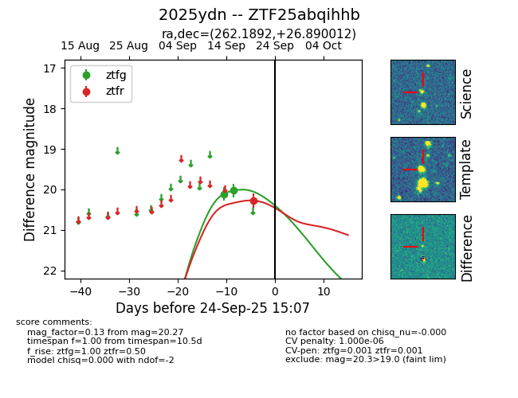

FINK: ZTF25abqihhb
Lasair: ZTF25abqihhb
ALeRCE: ZTF25abqihhb
TNS: 2025ydn
YSE: 2025ydn
ZTF25abqihhb (ztf,fink)
2025ydn (tns,yse)
equatorial (ra, dec) = (262.1892,+26.89001)
galactic (l, b) = (50.1732,+29.10559)

last ztfg=20.03, ztfr=20.27
2 ztfg, 1 ztfr detections